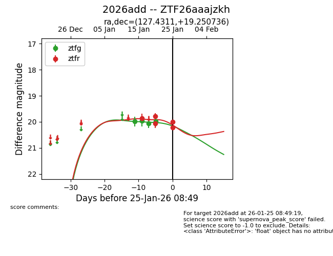
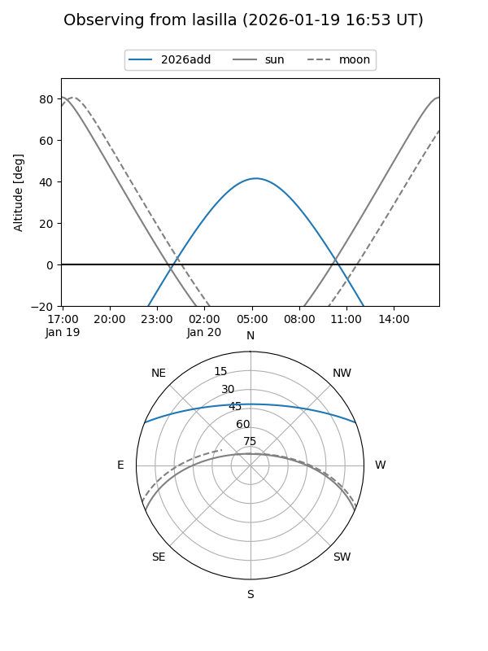
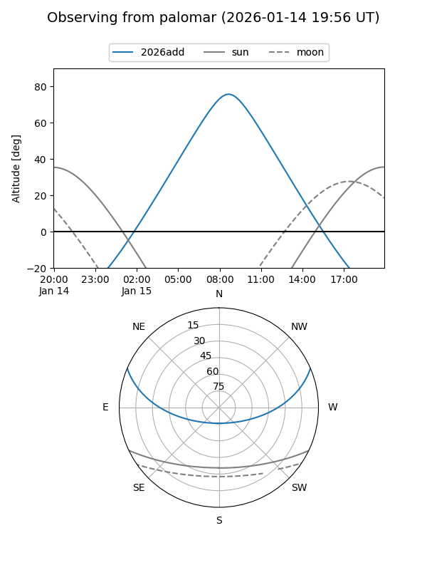
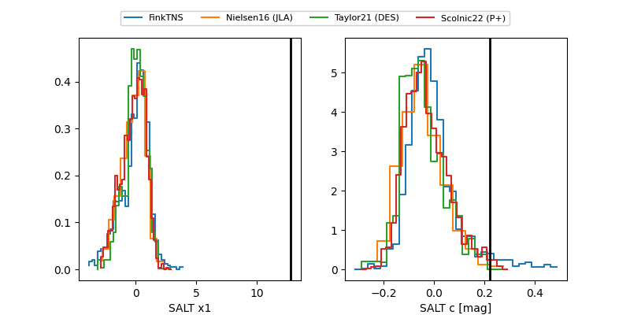

2026add
Target 2026add at 2026-01-14 22:05
Aliases and brokers:
FINK: link
Lasair: link
ALeRCE: link
TNS: link
YSE: link
alt names
ZTF26aaajzkh (ztf,fink_ztf)
2026add (tns,yse)
Coordinates:
equatorial (ra, dec) = 127.4311,+19.25074
equatorial (HMS+DMS) = 08:29:43.47,+19:15:02.65
galactic (l, b) = (205.3410,+29.98215)
Flags:
Photometry:
last ztfg=19.99
1 ztfg detections
Lightcurve

Visibility


Additional plots
